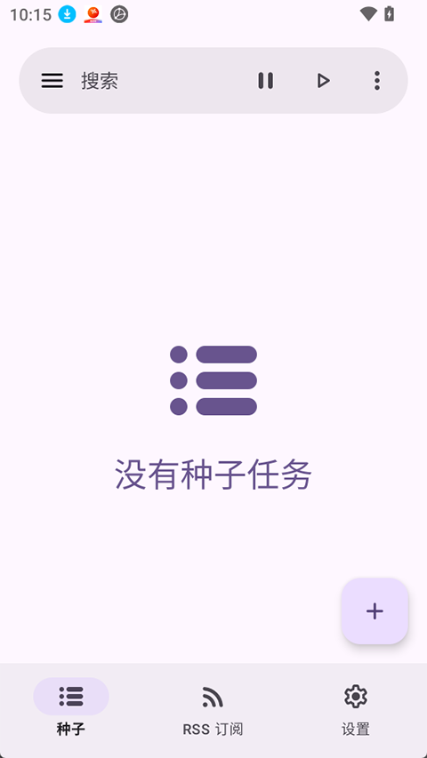

从 libtorrent 到 AMOLED：LibreTorrent 的 Android BT 客户端设计原理
为什么一个开源 BT 下载器能在 Android 生态里站稳脚跟？拆解它的引擎选型、数据隔离、后台保活和加密策略背后的设计取舍。
Android 上的 BT 客户端我用过好几个——有的界面花哨但广告多，有的轻量但配置简陋，有的功能全但体积膨胀。但我用下来最舒服的是从 LibreTorrent官网 拿到的版本——没有开屏广告、没有追踪 SDK——它是少数让我长期留在手机上的那一个。但真正让我停下来琢磨的不是"它好用"这个结论，而是另一个问题：一个开源项目，没有商业团队、没有广告收入，是怎么在移动平台上把 BT 下载这件事做对的？
引擎选型：不造轮子，但造好车
LibreTorrent 没有自己实现 BT 协议栈。它的核心下载引擎来自 libtorrent-rasterbar——一个用 C++ 写的、已经被 qBittorrent、Deluge、rTorrent 等桌面客户端验证过的成熟库。选择这条路不是偷懒，而是一种务实的工程判断。
移动端 BT 下载的瓶颈从来不是 UI 层，而是协议栈本身的性能和稳定性。DHT 节点维护、piece 调度、choke/unchoke 算法、UTP 拥塞控制——这些逻辑每一项都是几千行代码的量级，自己重写一遍既要踩坑又要花时间，最后还不一定比经过十年打磨的 libtorrent 更靠谱。LibreTorrent 做的事情是用 Kotlin 写 Android UI，通过 JNI 桥接到 libtorrent 的 C++ 核心，把"下载引擎"和"移动端壳"分开。这种分层架构让它既能享受成熟引擎的性能，又能在 Android 层面灵活适配系统特性。
从主界面就能看出这种分层的结果：种子列表、进度条、下载速度这些高频刷新的 UI 元素，直接从引擎拿到实时数据更新，中间没有额外的抽象层开销。

数据隔离：为什么备份不含下载文件
第一次看 LibreTorrent 的备份文档时我有点意外：它的备份只包含设置、种子列表和 RSS 订阅，不包含已经下载好的文件本身。这不是功能遗漏，而是一套有意为之的数据隔离设计。
Android 的存储权限模型从 10 开始变得非常严格——应用只能访问自己的专属目录（Android/data/<包名>/），如果要访问外部存储还得申请 MANAGE_EXTERNAL_STORAGE 这种高敏感权限。LibreTorrent 把下载文件独立放在用户指定的存储目录里，而把所有"配置态"数据（JSON 格式）留在应用内部的 files/ 目录。这样做有三个好处：
一是权限最小化——应用不需要请求文件管理器权限就能正常工作，隐私敏感的用户也能放心装。二是换机迁移更灵活——下载文件可以直接通过 MTP 或云盘复制，不需要等应用导出导入，种子配置通过一份 JSON 就能恢复。三是崩溃不丢文件——即使应用数据被清，下载目录里的文件还在，从 官方下载 拿到安装包重装后导入种子就能自动校验继续。
手动备份路径 org.proninyaroslav.libretorrent/files/ 下存的就是这些 JSON 文件，用文本编辑器打开能看到每一个种子的元信息——这也是开源的好处：数据格式透明，想怎么改都可以。

后台保活：三要素缺一不可
Android 6.0 引入 Doze 模式以来，后台应用被系统杀死是家常便饭。LibreTorrent 要实现"锁屏时继续下载"，不能只靠前台服务一条路。它的文档里提到了一个我觉得写得很实在的三要素：自启动 + 前台服务 + 电池白名单，缺了哪个都不行。
自启动解决的是"重启后能不能自动恢复"的问题——但这个权限得用户在系统层面手动授予，不同厂商的入口还不一样（小米在应用设置里，华为在电池管理里，OPPO 在自启动管理里）。前台服务是 Android 官方允许的"常驻后台"方式，只要通知栏挂着一条下载进度，系统就不会轻易杀它。电池白名单是最后一道保险——Doze 模式下即使是前台应用，如果没被加入优化白名单，长时间锁屏后也会被限速。
有意思的是，LibreTorrent 没有试图绕过这些系统约束，而是老老实实地把三个权限的获取路径告诉用户，在 LibreTorrent文档 里逐条列出来让你检查。这种做法在 Android 客户端里反而少见——很多应用要么假装自己能后台（实际被系统杀死后静默恢复失败），要么引导用户去做各种不推荐的系统设置（比如关闭电池优化全局开关）。
加密策略：优先而非强制
很多 BT 客户端做加密时要么默认关闭、要么强制加密。LibreTorrent 把"优先加密"作为默认选项——能用 MSE/PE 就用，对方不支持就退为明文。这背后是一个典型的网络工程取舍。
MSE/PE 是 BitTorrent 官方推荐的加密协议，基于 RC4，和 qBittorrent、Deluge 等主流客户端兼容。它能让 ISP 的深度包检测（DPI）把 BT 流量识别成普通 HTTPS 加密连接，避免被限速。但强制加密有代价——部分旧式客户端不支持加密握手，如果对方连不上，你的 peer 数量就会减少，下载速度反而可能更慢。
"优先加密"在安全性和连接数之间找了一个平衡点：能加密的连接尽量加密，不能加密的也不硬拒。再加上它同时支持 UTP 协议自带的加密层，双层覆盖下大多数场景都够用了。当然加密不是万能的——ISP 如果直接封 6881 端口，再强的加密也没用，这时候就得配代理。
取舍与适用场景
说完设计原理，得聊聊 LibreTorrent 的局限。它坚持纯开源、零广告、数据最小化这些原则，也带来了一些代价：
- 没有内建的 VPN 或代理集成，网络受限的用户需要自己在外层加一层
- 加密连接可能比明文少一些 peer，在小众种子上下载速度可能略慢
- 纯开源意味着没有付费客服，遇到问题得自己翻文档或去 GitHub 提 issue
- 三种主题里只有纯黑（AMOLED）主题能真省电，深色主题在 LCD 屏上其实和浅色功耗差不了多少
那它适合谁？如果你在 Android 上经常用 BT、在意隐私（不想装一堆追踪器）、讨厌广告、愿意花十分钟把三个后台权限配好——LibreTorrent 很可能是你能找到的最干净、最稳的选择。如果你只想装完点开就用、不想折腾系统设置、或者是 iOS 用户（LibreTorrent 没有 iOS 版本），那它可能不是最优解。
这套资料在三个仓库都能拿到——GitHub 主仓库有完整的备份文件、Gitee 方便国内用户直接下载、GitCode 做了第三份镜像防止单点不可用。从引擎选型到数据隔离、从后台保活的务实态度到加密策略的平衡取舍，LibreTorrent 的每一个设计决策背后都能看到"服务 Android 用户"这个核心目标。